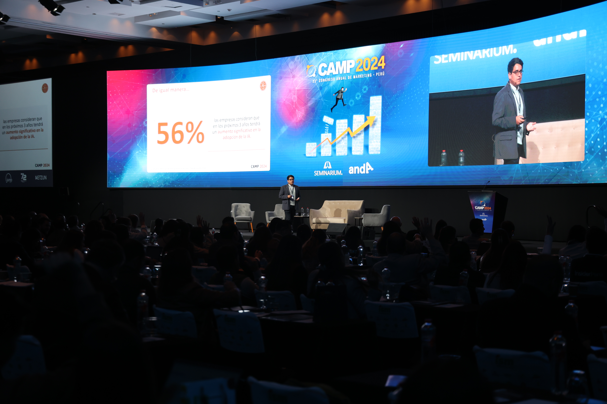

Speaker
Conferencias &
Comunidad



10 jun 2026 · Panelista
Digital Enterprise Show — Data & CDO Summit
"Data Governance in the Age of Sovereignty & AI"
Málaga, España
13 may 2026 · Panelista
CDO Day
"El futuro del dato y la IA: visión estratégica para la próxima década"
Madrid, España
11 may 2026 · Sesión VIP
CDO HUB
Debate a puerta cerrada sobre retos y tendencias del sector con CDOs de empresas referentes
Madrid, España
23 mar 2026 · Panelista
Smart Data Spain Summit
"De la inversión al impacto: costes, decisiones inteligentes y ROI real"
Madrid, España
21 feb 2026 · Keynote
Microsoft Global Power Platform Bootcamp
"Construyendo una arquitectura de datos en Microsoft: De los datos al valor de negocio"
Valladolid, España
16 ago 2025 · Keynote
IA & Data Conference
"Adopción de la Inteligencia Artificial en el contexto empresarial"
Lima, Perú
29 oct 2024 · Keynote
Semana de la Educación Financiera — Fundación BBVA & Alfi
"Inteligencia Artificial aplicada a las finanzas"
Lima, Perú
13 jun 2024 · Keynote
Congreso Anual de Marketing Perú - CAMP
"Aplicaciones prácticas de la Inteligencia Artificial en Marketing"
Lima, Perú
29 sep 2023 · Keynote
Seminario Internacional de Inteligencia Artificial para los Negocios
"Aplicaciones de la IA en el entorno empresarial e industrial"
Cusco, Perú
Club CDO Spain & Latam
CIONET Spain
ESADE Alumni